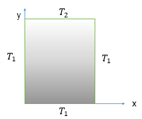
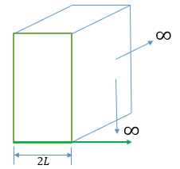
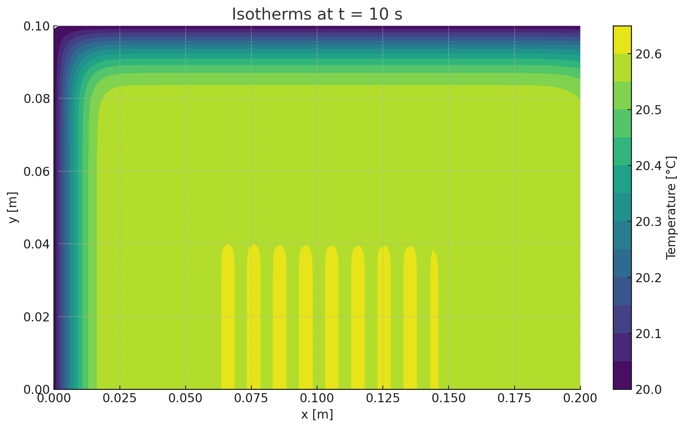
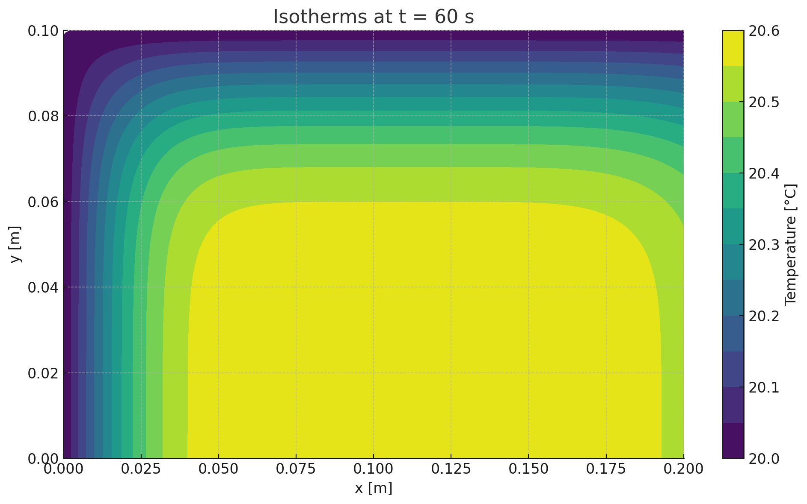
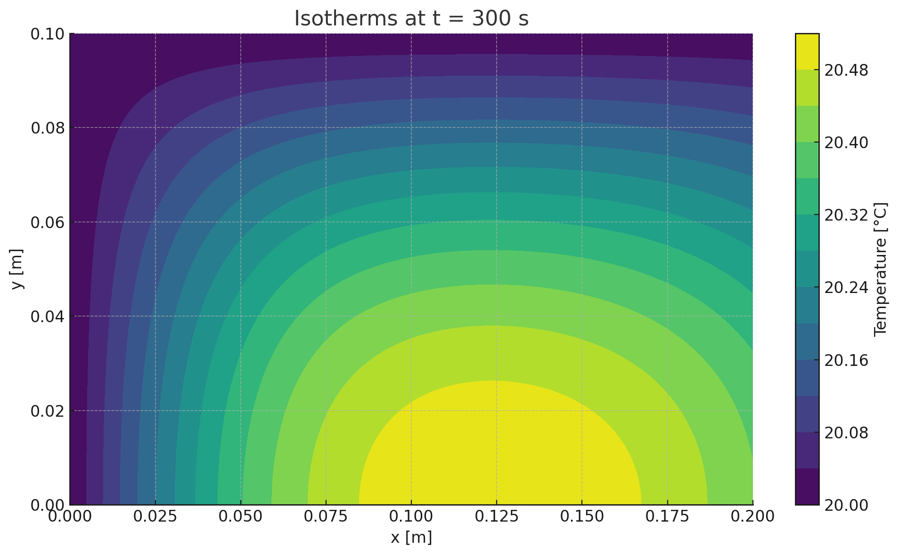
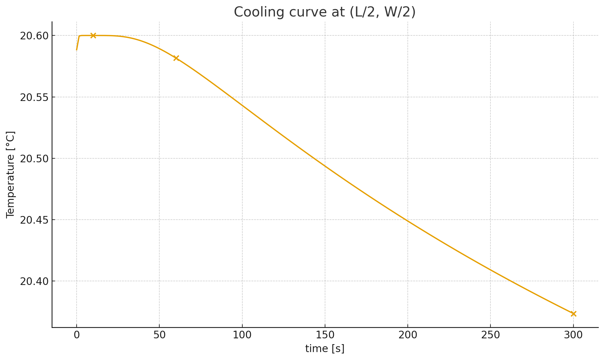
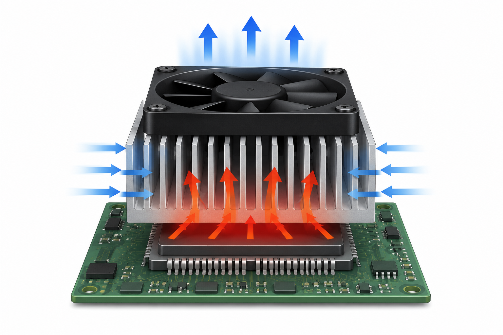
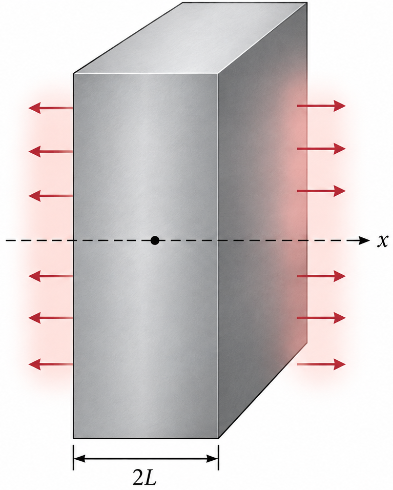
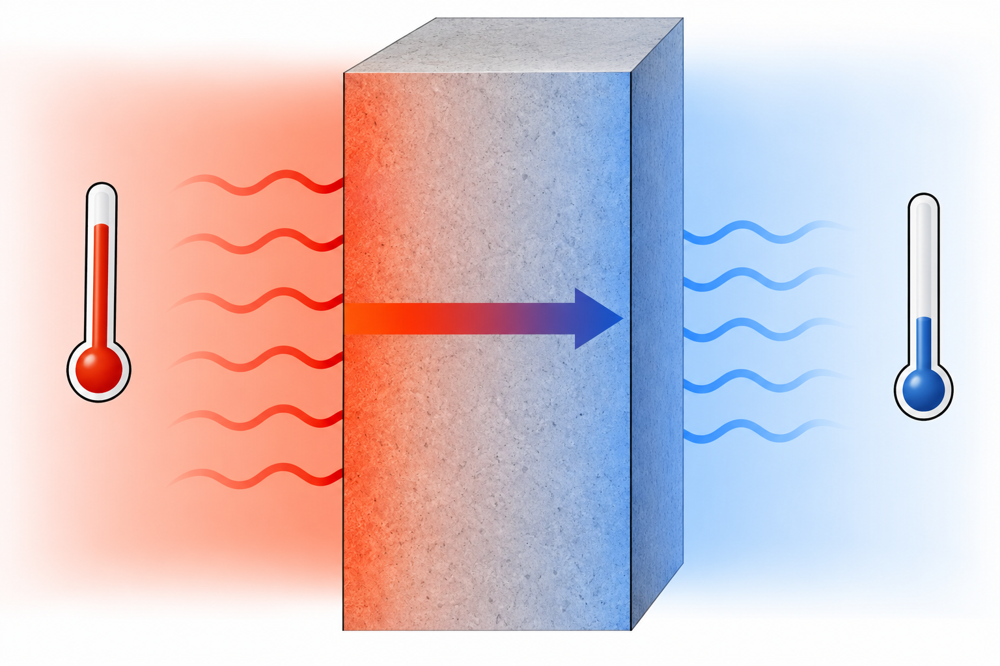
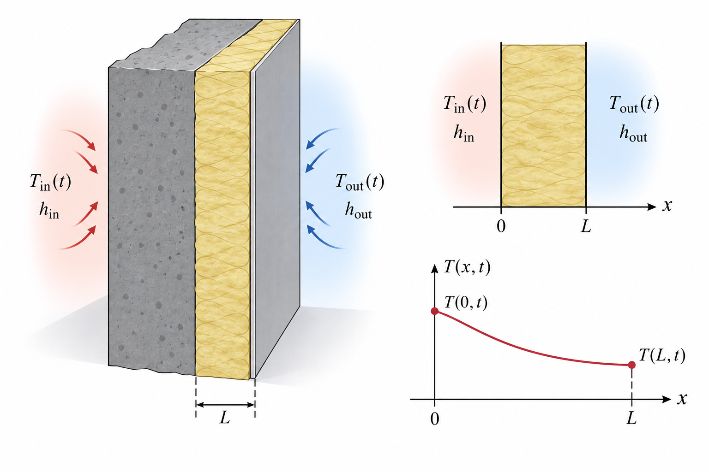

MATH3001(5005) — Applied Mathematical Modelling (Topics)
Curtin University
15 Sep 2026
2.5.2 2D Steady-State Conduction
2.5.3 Unsteady-State Conduction
2.5.4 2D Unsteady-State Conduction
2.5.5 Numerical Methods and Applications

Consider a thin rectangular plate of dimensions \(L \times W\), governed by the steady-state 2D heat conduction eq:
\[ \frac{\partial^2 T}{\partial x^2} + \frac{\partial^2 T}{\partial y^2} = 0, \quad 0 < x < L, \, 0 < y < W \]
Left side (\(x=0\)): isothermal, \(T(0,y) = T_1, \; 0 \le y \le W\)
Right side (\(x=L\)): isothermal, \(T(L,y) = T_1, \; 0 \le y \le W\)
Bottom side (\(y=0\)): isothermal, \(T(x,0) = T_1, \; 0 \le x \le L\)
Top side (\(y=W\)): isothermal, \(T(x,W) = T_2, \; 0 \le x \le L\)
To solve for \(T(x,y)\), we apply the method of separation of variables:
\[ \begin{align} &\frac{\partial^2 T}{\partial x^2} + \frac{\partial^2 T}{\partial y^2} = 0 \\ & T(0,y) = T_1, \quad T(L,y) = T_1,\\ &T(x,0) = T_1, \quad T(x,W) = T_2, \end{align} \tag{1}\]
To reduce the number of non-homogeneous BCs, introduce the transformation
\[ \theta = \frac{T - T_1}{T_2 - T_1} \quad \text{(or } \theta = T - T_1 \text{)} \tag{2}\]
\[ \begin{align} & \frac{\partial^2 \theta}{\partial x^2} + \frac{\partial^2 \theta}{\partial y^2} = 0 \\ & \theta(0,y) = 0, \quad \theta(x,0) = 0,\\ & \theta(L,y) = 0, \quad \theta(x,W) = 1 \end{align} \tag{3}\]
Introduce the separation of variables technique to solve the PDE.
\[ \theta(x,y) = X(x)\cdot Y(y) \tag{4}\]
Substituting the above into (3) and dividing by \(XY\), we obtain
\[ - \frac{1}{X}\frac{d^2 X}{dx^2} = \frac{1}{Y}\frac{d^2 Y}{dy^2} = \mu \tag{5}\]
We solve the problem for \(\qquad\mu = -\lambda^2 < 0, \ \lambda^2 > 0\).
It is found that non-trivial sol exists only for \(\mu = \lambda^2\) and
\[ \frac{d^2 X}{dx^2} + \lambda^2 X = 0 \tag{6}\]
\[ \frac{d^2 Y}{dy^2} - \lambda^2 Y = 0 \tag{7}\]
\[ X = C_1 \cos \lambda x + C_2 \sin \lambda x \tag{8}\]
\[ Y = C_3 e^{-\lambda y} + C_4 e^{\lambda y} \tag{9}\]
Now consider BCs:
\[ \theta(0,y) = X(0)Y(y) = 0 \quad \Rightarrow \quad X(0) = 0 \tag{10}\]
\[ \theta(L,y) = X(L)Y(y) = 0 \quad \Rightarrow \quad X(L) = 0 \tag{11}\]
\[ \theta(x,0) = X(x)Y(0) = 0 \quad \Rightarrow \quad Y(0) = 0 \tag{12}\]
Substituting (8) into (10) gives \(\qquad X(0) = C_1 = 0 \; \Rightarrow \; X(x) = C_2 \sin \lambda x.\)
From (11), we have
\[ X(L) = C_2 \sin \lambda L = 0 \quad \Rightarrow \quad \lambda = \frac{n\pi}{L}, \quad \text{as } C_2 \neq 0 \]
\[ \therefore \quad X(x) = C_2 \sin \left(\frac{n \pi x}{L}\right) \]
\[ \begin{align} \theta (x,y) &= 2C_2 C_4 \sin \frac{n\pi x}{L} \sinh \frac{n\pi y}{L}\\ \Rightarrow \theta(x,y) &= C_n \sin \frac{n\pi x}{L} \sinh \frac{n\pi y}{L} \end{align} \tag{13}\]
A more general solution may be obtained using the principle of superposition \[ \theta(x,y) = \sum_{n=1}^{\infty} C_n \sin \frac{n\pi x}{L} \sinh \frac{n\pi y}{L} \tag{14}\]
To determine \(C_n\), we apply the remaining BC (the non-homogeneous BC)
\[ \theta(x,W) = 1 = \sum_{n=1}^{\infty} C_n \sin \frac{n\pi x}{L} \sinh \frac{n\pi W}{L} = \sum_{n=1}^{\infty} \left[ C_n \sinh \frac{n\pi W}{L} \right] \sin \frac{n\pi x}{L}, \tag{15}\]
which is the Fourier sine series expansion of the function \(f(x)=1\).
\[ C_n \sinh \frac{n\pi W}{L} = \frac{2}{L} \int_0^L \left[1 \cdot \sin \frac{n\pi x}{L}\right] dx \]
\[ = \frac{2}{L} \left[ -\frac{L}{n\pi} \cos \frac{n\pi x}{L} \right]_0^L \]
\[ = \frac{-2}{n\pi} \left( \cos n\pi - 1 \right) \]
\[ C_n \sinh \frac{n\pi W}{L} = \frac{2}{n\pi} \left[1 - (-1)^n\right] \]
\[ \Rightarrow \quad C_n = \frac{2\left[1 - (-1)^n\right]}{n\pi \sinh \dfrac{n\pi W}{L}} \tag{16}\]
The Fourier sine series expansionof \(f(x)\) defined on \([0,L]\) is \[ f(x) = \sum_{n=1}^{\infty} b_n \sin \frac{n\pi x}{L} \qquad \text{with} \qquad b_n = \frac{2}{L} \int_0^L f(x) \sin \frac{n\pi x}{L} \, dx \]
\[ \theta(x,y) = \frac{2}{\pi} \sum_{n=1}^{\infty} \frac{(-1)^{n+1} + 1}{n} \sin \frac{n\pi x}{L} \, \frac{\sinh \left(\dfrac{n\pi y}{L}\right)}{\sinh \left(\dfrac{n\pi W}{L}\right)}. \]
\[ \Rightarrow T(x,y) = T_1 + (T_2-T_1)\frac{2}{\pi} \sum_{n=1}^{\infty} \frac{(-1)^{n+1} + 1}{n} \sin \frac{n\pi x}{L} \, \frac{\sinh \left(\dfrac{n\pi y}{L}\right)}{\sinh \left(\dfrac{n\pi W}{L}\right)} \tag{17}\]
\[ \frac{\partial^2 T}{\partial x^2} + \frac{\partial^2 T}{\partial y^2}=0, \qquad 0<x<L,\; 0<y<W \]
\[ \begin{aligned} &T(0,y)=T_0, \quad T(L,y)=T_1,&\\ &\frac{\partial T}{\partial y}(x,0)=0, \quad -k\,\frac{\partial T}{\partial y}(x,W)=h\,[T(x,W)-T_\infty]. \end{aligned} \]
Define the reference scales \[ x^*=\dfrac{x}{L},\qquad y^*=\dfrac{y}{W},\qquad \theta=\dfrac{T-T_1}{T_0-T_1}, \]
The Biot number \(\mathrm{Bi}=\dfrac{hW}{k}\) and the aspect ratio of the plate \(\gamma=\dfrac{L}{W}.\)
\[ \frac{\partial^2 \theta}{\partial x^{*2}} + \frac{\partial^2 \theta}{\partial y^{*2}}=0, \qquad 0<x<L,\; 0<y<W \]
\[ \begin{aligned} &\theta(0,y^*)=1, & \theta(1,y^*)=0,\\ &\frac{\partial \theta}{\partial y^*}(x^*,0)=0, & -\frac{\partial \theta}{\partial y^*}(x^*,1)&=\!\mathrm{Bi}\, \big[\theta(x^*,1)-\theta_\infty\big], \end{aligned} \]
\[ \theta_\infty=\frac{T_\infty-T_1}{T_0-T_1}. \]
To solve the PDE with the given BCs, we seek a product solution of the form
\[ \theta(x^*,y^*)=X(x^*)Y(y^*). \tag{18}\]
Subs (18) into the PDE gives
\[ \frac{X''}{X}=-\gamma^2\,\frac{Y''}{Y}=-\lambda^2, \quad \Rightarrow \]
\[ X''+\lambda^2 X=0, \quad Y''-\frac{\lambda^2}{\gamma^2}Y=0. \]
Introduce \(u=\theta-\theta_b(x^*)\) with a simple bridging function \(\theta_b(x^*)=1-x^*\)
\[ \Rightarrow \quad\text{so that}\quad u(0,y^*)=u(1,y^*)=0. \]
The function \(u\) satisfies homogeneous Dirichlet BCs at \(x^*=0\) and \(x^*=1\).
\[ X_n(x^*)=A_n\sin(n\pi x^*),\ \lambda_n=n\pi. \]
Then expand \(u\) in a sine series:
\[ u(x^*,y^*)=\sum_{n=1}^\infty A_n\,\sin(n\pi x^*)\,Y_n(y^*). \]
\[ Y_n''-\left(\frac{n\pi}{\gamma}\right)^2 Y_n=0,\quad Y_n'(0)=0,\quad -\,Y_n'(1)=\mathrm{Bi}\,Y_n(1). \]
Solution for \(Y_n\) (using \(Y_n' (0)=0,\,\, \Rightarrow\) cosh form): \[ \begin{align} Y_n(y^*)&=\cosh\!\left(\frac{n\pi}{\gamma} y^*\right) +\alpha_n\,\sinh\!\left(\frac{n\pi}{\gamma} y^*\right),\\ \text{with}\quad \alpha_n&=\frac{\frac{n\pi}{\gamma}\,\sinh\!\left(\frac{n\pi}{\gamma}\right)-\mathrm{Bi}\,\cosh\!\left(\frac{n\pi}{\gamma}\right)} {\mathrm{Bi}\,\sinh\!\left(\frac{n\pi}{\gamma}\right)+\frac{n\pi}{\gamma}\,\cosh\!\left(\frac{n\pi}{\gamma}\right)}. \end{align} \]
Final representation is \[ \theta(x^*,y^*) = \theta_b(x^*) + \sum_{n=1}^{\infty} A_n \sin(n\pi x^*)\,Y_n(y^*), \] where \(A_n\) follow from projecting the residual at \(y^*=1\) onto \(\sin(n\pi x^*)\).
We expanded \[ u(x^*,y^*)=\sum_{n=1}^\infty A_n \sin(n\pi x^*)\,Y_n(y^*), \qquad Y_n(y^*)=\cosh\!\left(\frac{n\pi}{\gamma}y^*\right), \] with \(\gamma=L/W\) and \(u=\theta-\theta_b(x^*)\), \(\theta_b(x^*)=1-x^*\).
\[ -\,u_{y^*}(x^*,1)-\mathrm{Bi}\,u(x^*,1)=\mathrm{Bi}\,[\,\theta_b(x^*)-\theta_\infty\,], \quad\text{with}\quad \theta_\infty=\dfrac{T_\infty-T_1}{T_0-T_1} \]
Projecting onto \(\sin(n\pi x^*)\) yields \[ -\,A_n\,\alpha_n\sinh(\alpha_n) = \mathrm{Bi}\Big[\,A_n\cosh(\alpha_n)+b_n\,\Big], \qquad \alpha_n=\frac{n\pi}{\gamma}, \] with \[ b_n=\frac{2}{n\pi}\int_{0}^{1}\big(1-x^*-\theta_\infty\big)\sin(n\pi x^*)\,dx^* =\frac{2}{n\pi}\Big[1-\theta_\infty(1-(-1)^n)\Big]. \]
\[\begin{align} \Rightarrow\quad A_n&=-\,\frac{\mathrm{Bi}\,b_n}{\alpha_n\sinh(\alpha_n)+\mathrm{Bi}\cosh(\alpha_n)},\\ \\ b_n &= \begin{cases} \dfrac{2}{n\pi}, & n\ \text{even}, \\[6pt] \dfrac{2}{n\pi}\,(1-2\theta_\infty), & n\ \text{odd}. \end{cases} \end{align}\]
Since \(u=\theta-\theta_b(x^*)\), \(\theta_b(x^*)=1-x^*\) and
\[ u(x^*,y^*)=\sum_{n=1}^\infty A_n \sin(n\pi x^*)\,\cosh\!\left(\frac{n\pi}{\gamma}y^*\right), \]
Then \[ \theta(x^*,y^*) = 1 - x^* - \sum_{n=1}^\infty \frac{\mathrm{Bi}\,b_n}{\alpha_n\sinh(\alpha_n)+\mathrm{Bi}\cosh(\alpha_n)} \sin(n\pi x^*)\,\cosh\!\left(\frac{n\pi}{\gamma}y^*\right). \]
As \(\theta =\dfrac{T-T_1}{T_0-T_1}\), we have the solution \[ T(x^*,y^*) = T_1 + \theta(T_0-T_1). \]
For 1D conduction with constant thermal diffusivity \(\alpha\) and no internal heat generation, the governing equation is
\[ \frac{\partial T}{\partial t} = \alpha\frac{\partial^2T}{\partial x^2}. \tag{19}\]
Using the method of separation of variables, the temperature field is commonly represented as a Fourier series of the form
\[ T(x,t) = \sum_{n=1}^{\infty} C_nX_n(x)e^{-\alpha\lambda_n^2t}, \]
For the 1D transient heat eq, assume
\[ T(x,t)=X(x)\Theta(t), \]
where \(X(x)\) depends only on position and \(\Theta(t)\) depends only on time.
Substituting into (19) gives
\[ X\frac{d\Theta}{dt} = \alpha\Theta\frac{d^2X}{dx^2} \]
\[ \Rightarrow \frac{1}{\alpha\Theta} \frac{d\Theta}{dt} = \frac{1}{X} \frac{d^2X}{dx^2}. \]
Since LHS depends only on \(t\) and RHS depends only on \(x\), both sides must be equal to the same constant. For standard heat-conduction eigenvalue problem, this constant is written as \(-\lambda^2\):
\[ \frac{1}{\alpha\Theta} \frac{d\Theta}{dt} = \frac{1}{X} \frac{d^2X}{dx^2} = -\lambda^2. \]
This produces two ODEs, the spatial eq and the time eq:
\[ \frac{d^2X}{dx^2}+\lambda^2X=0, \quad \frac{d\Theta}{dt} + \alpha\lambda^2\Theta=0. \]
Consider the infinite plate of thickness \(2L\) with uniform initial temperature \(T_i\).
At time \(t=0\), the surface temperatures are suddenly lowered to \(T=T_1\).
The goal is to determine the temperature as a function of time and position.
The governing differential equation is
\[ \frac{\partial^2 T}{\partial x^2} = \frac{1}{\alpha}\,\frac{\partial T}{\partial t} \tag{20}\]
with the initial and boundary conditions
\[ T = T_i \quad \text{at } t=0, \; 0 \leq x \leq 2L \tag{21}\]
\[ T = T_1 \quad \text{at } t>0, \; x=0, 2L \tag{22}\]

To reduce the number of non-homogeneous BCs so as to apply the separation of variables method, let
\[ \theta = T - T_1. \]
Then
\[ \frac{\partial^2 \theta}{\partial x^2} = \frac{1}{\alpha}\,\frac{\partial \theta}{\partial t} \tag{23}\]
\[ \theta = \theta_i = T_i - T_1 \quad \text{at } t=0,\; 0 \leq x \leq 2L \tag{24}\]
\[ \theta = 0 \quad \text{at } x=0,2L,\;\; t>0 \tag{25}\]
To solve the problem, use separation of variables. Let \[ \theta = X(x)T(t) \tag{26}\]
\[ \frac{1}{X}\frac{d^2X}{dx^2} = \frac{1}{\alpha T}\frac{dT}{dt} = -\lambda^2 \tag{27}\]
From the homogeneous BCs (25), we have
\[ \theta(0,t)=X(0)T(t)=0 \;\;\Rightarrow\;\; X(0)=0 \tag{28}\]
\[ \theta(2L,t)=X(2L)T(t)=0 \;\;\Rightarrow\;\; X(2L)=0 \tag{29}\]
It can be shown that \(\beta=0,\;\beta=-\mu^2\) would only yield trivial solutions.
For \(\beta=-\lambda^2\), we have two ordinary DEs:
\[ \frac{d^2 X}{dx^2} + \lambda^2 X = 0 \tag{30}\]
\[ \frac{dT}{dt} + \lambda^2 \alpha T = 0 \tag{31}\]
Solutions are
\[ X = C_1 \cos \lambda x + C_2 \sin \lambda x \tag{32}\]
\[ T = D e^{-\alpha \lambda^2 t} \tag{33}\]
From (29) and (32), \(\qquad X(2L) = C_2 \sin 2\lambda L = 0\)
\[\Rightarrow 2\lambda L = n\pi \; \text{or} \; \lambda = \dfrac{n\pi}{2L}\]
\[ \therefore X(x) = C_2 \sin \frac{n\pi}{2L}x. \]
Thus, a desired solution has the form
\[ \theta_n = C_n \sin \frac{n\pi}{2L}x \, e^{-\alpha \left(\frac{n\pi}{2L}\right)^2 t}, \qquad n=1,2,3,\ldots \]
The final series form of the solution is therefore \[ \theta = \sum_{n=1}^\infty C_n e^{-\left[\tfrac{n\pi}{2L}\right]^2 \alpha t} \sin \frac{n\pi}{2L}x \]
The constants \(C_n\) are determined from (21). Hence \[ C_n = \frac{1}{L}\int_0^{2L} \theta_i \sin\!\left(\frac{n\pi x}{2L}\right) dx = \frac{4}{n\pi}\,\theta_i, \qquad n=1,3,5,\ldots \]
The final series solution is therefore \[ \frac{\theta}{\theta_i} = \frac{T-T_1}{T_i-T_1} = \frac{4}{\pi}\sum_{n=1,3,5,\ldots}^\infty \frac{1}{n}\,e^{-\left[\tfrac{n\pi}{2L}\right]^2\alpha t} \sin\!\left(\frac{n\pi x}{2L}\right) \]
\[ T=T_1 + \frac{4}{\pi}\sum_{n=1,3,5,\ldots}^\infty \frac{1}{n}\,(T_i-T_1)\,e^{-\left[\tfrac{n\pi}{2L}\right]^2\alpha t} \sin\!\left(\frac{n\pi x}{2L}\right) \]
Governing PDE (dimensional):
\[ \begin{aligned} &\frac{\partial T}{\partial t}=\alpha\!\left(\frac{\partial^2 T}{\partial x^2}+\frac{\partial^2 T}{\partial y^2}\right), \\ 0<x&<L,\;0<y<W,\quad \alpha=\frac{k}{\rho c}. \end{aligned} \]
Initial condition: \(\qquad T(x,y,0)=T_i,\qquad 0<x<L,\;0<y<W\)
Boundary conditions (dimensional):
\[ \begin{aligned} &\text{Left (Dirichlet):} && T(0,y,t)=T_0,\\ &\text{Bottom (Neumann/insulated):} && \displaystyle \frac{\partial T}{\partial y}(x,0,t)=0,\\ &\text{Right (Robin/convection):} && \displaystyle -k\,\frac{\partial T}{\partial x}(L,y,t)=h\,[T(L,y,t)-T_\infty],\\ &\text{Top (Dirichlet):} && T(x,W,t)=T_1. \end{aligned} \]
Nondimensionalisation
\[ x^*=\frac{x}{L},\quad y^*=\frac{y}{W},\quad t^*=\frac{\alpha t}{L^2},\quad \theta=\frac{T-T_1}{T_i-T_1},\] \[\gamma=\frac{L}{W},\quad \mathrm{Bi}_x=\frac{hL}{k}. \]
\[ \theta_{t^*}=\theta_{x^{*}x^{*}}+\gamma^{2}\theta_{y^{*}y^{*}}, \]
subject to initial and boundary conditions
\[ \theta(x^*,y^*,0)=1, \]
\[ \theta(0,y^*,t^*)=\frac{T_0-T_1}{T_i-T_1}, \qquad\quad \theta_{y^*}(x^*,0,t^*)=0, \]
\[ -\theta_{x^*}(1,y^*,t^*)=\mathrm{Bi}_x\,\theta(1,y^*,t^*),\;\; \theta(x^*,1,t^*)=0. \]
Separation of variables (Robin–Dirichlet in \(x^*\), Neumann–Dirichlet in \(y^*\))
First remove the inhomogeneous boundaries with a steady part \(\theta_s(x^*,y^*)\) that solves Laplace:
\[ \begin{aligned} & \theta_{s,\,x^*x^*}+\gamma^2\theta_{s,\,y^*y^*}=0,\\ &\theta_s(0,y^*)=\theta_L,\;\theta_{s,y^*}(x^*,0)=0,\\ -&\theta_{s,x^*}(1,y^*)=\mathrm{Bi}_x \theta_s(1,y^*),\;\theta_s(x^*,1)=0. \end{aligned} \]
Then the transient \(\phi=\theta-\theta_s\) satisfies the problem
\[ \phi_{t^*}=\phi_{x^{*}x^{*}}+\gamma^2\phi_{y^{*}y^{*}}, \]
subject to initial condition
\[ \phi(x^*,y^*,0)=1-\theta_s(x^*,y^*) \]
and boundary conditions \[\begin{align*} \phi(0,y^*,t^*)&=0,\\ \phi_{y^*}(x^*,0,t^*)&=0,\\ -\phi_{x^*}(1,y^*,t^*)&=\mathrm{Bi}_x\,\phi(1,y^*,t^*),\\ \phi(x^*,1,t^*)&=0. \end{align*}\]
Seek separated solutions \(\phi=X(x^*)Y(y^*)e^{-\lambda t^*}\) giving
\[\begin{align*} & \frac{X''}{X}+\gamma^2\frac{Y''}{Y}=-\lambda \;\Rightarrow\;X''+\mu^2 X=0,\\ & Y''+\nu^2 Y=0,\quad \lambda=\mu^2+\gamma^2\nu^2. \end{align*}\]
\[ Y'(0)=0,\;Y(1)=0\Rightarrow Y_n(y^*)=\cos(\nu_n y^*),\] \[\nu_n=\dfrac{(2n-1)\pi}{2},\;n=1,2,\ldots \]
\[ X(0)=0,\;-X'(1)=\mathrm{Bi}_x X(1)\Rightarrow X_m(x^*)=\sin(\mu_m x^*), \] where the \(\mu_m\) are the positive roots of the Robin transcendental equation.
\[ mu_m\cot\mu_m=-\mathrm{Bi}_x\;\]
\[\text{(one root in each interval }((m-\tfrac12)\pi,(m+\tfrac12)\pi) \]
The transient expansion is \[ \phi(x^*,y^*,t^*)=\sum_{m=1}^{\infty}\sum_{n=1}^{\infty} B_{mn}\,\sin(\mu_m x^*)\cos(\nu_n y^*)\,\exp\!\left[-\big(\mu_m^2+\gamma^2\nu_n^2\big)t^*\right]. \]
With the standard inner product on \([0,1]^2\) (these are Sturm–Liouville systems), the norms are \[ \int_0^1\sin^2(\mu_m x)\,dx=\tfrac12\!\left(1-\dfrac{\sin 2\mu_m}{2\mu_m}\right)=:I_m, \]
\[ \int_0^1\cos^2(\nu_n y)\,dy=\tfrac12. \] Projecting the initial condition
\[ \phi(x,y,0)=1-\theta_s(x,y) \]
gives \[ B_{mn}=\frac{2}{I_m}\int_0^1\!\!\int_0^1\Big(1-\theta_s(x,y)\Big)\sin(\mu_m x)\cos(\nu_n y)\,dx\,dy. \]
Expand in the \(y\)-basis (which already enforces the Neumann–Dirichlet pair):
\[ \theta_s(x,y)=\sum_{n=1}^\infty A_n(x)\cos(\nu_n y), \]
\[ A_n''-\gamma^2\nu_n^2 A_n=0. \]
With \(A_n(0)=g_n,\; -A_n'(1)=\mathrm{Bi}_x A_n(1)\) and the cosine-series of the left-wall constant \(\theta_L\),
\[ g_n=\frac{\langle \theta_L,\cos(\nu_n y)\rangle}{\langle \cos,\cos\rangle} =2\theta_L\frac{\sin\nu_n}{\nu_n} =2\theta_L\frac{(-1)^{n+1}}{\nu_n}, \]
\[ A_n(x)=g_n\cosh(\gamma\nu_n x)+D_n\sinh(\gamma\nu_n x) \] \[ \text{with}\,\,D_n=-g_n\,\frac{\mathrm{Bi}_x\cosh(\gamma\nu_n)+\gamma\nu_n\sinh(\gamma\nu_n)} {\gamma\nu_n\cosh(\gamma\nu_n)+\mathrm{Bi}_x\sinh(\gamma\nu_n)}. \]
Finally, the steady solution is \[ \theta(x,y,t^*)=\theta_s(x,y)+ \sum_{m=1}^{\infty}\sum_{n=1}^{\infty} B_{mn}\,\sin(\mu_m x)\cos(\nu_n y)\,e^{-(\mu_m^2+\gamma^2\nu_n^2)t^*}. \] Recover the dimensional temperature via \(T=T_1+(T_i-T_1)\theta\).
At this early stage, the plate interior remains hot. The left and top edges (Dirichlet boundaries at \(20^\circ\mathrm{C}\)) have cooled significantly, producing densely packed isotherms near these sides.
The insulated bottom boundary yields nearly horizontal isotherms, since no heat escapes through it.

On the right edge, cooling occurs by convection; however, because the Biot number is moderate, the gradient at this wall is less steep than at the fixed–temperature boundaries.



This curve represents the temporal decay of the center–point temperature.
Starting from \(80^\circ\mathrm{C}\), the temperature drops rapidly within the first minute, after which the cooling rate slows down as the system approaches equilibrium.
By \(t\approx 300\;\mathrm{s}\), the center temperature is already very close to \(20^\circ\mathrm{C}\), although the approach to the ambient temperature is asymptotic.
Common numerical methods include the finite-difference method (FDM), finite-volume method (FVM), and finite-element method (FEM).
These methods divide the physical domain into discrete points, control volumes, or elements and approximate the governing differential equation by a system of algebraic equations.
For example, the second derivative in a one-dimensional finite-difference model may be approximated by
\[ \left.\frac{d^2T}{dx^2}\right|_i \approx \frac{T_{i+1}-2T_i+T_{i-1}}{\Delta x^2}. \]
Consider a thin electronic chip that generates heat internally while being cooled by a heat sink or surrounding air
The governing eq is the 1D heat eq with an internal heat source

\[ \frac{\partial u}{\partial t} = \alpha^2 \frac{\partial^2u}{\partial x^2} + \frac{Q(x,t)}{\rho c_p},\quad\text{with}\quad \alpha=\sqrt{\dfrac{k}{\rho c_p}} \]
If the electronic device generates a constant amount of heat, \(Q(x,t)=Q_0,\) then \[ \frac{\partial u}{\partial t} = \alpha^2 \frac{\partial^2u}{\partial x^2} + \frac{Q_0}{\rho c_p}. \]
If the entire device is initially at a uniform temperature of \(80^\circ\text{C}\), at time \(t=0\): \[ u(x,0)=80^\circ\text{C}. \]
More generally, \(u(x,0)=f(x),\) where \(f(x)\) is the initial temperature distribution.
Suppose the two ends of the electronic component are attached to a perfect heat sink maintained at constant temperature. Then
\[u(0,t)=25^\circ\mathrm{C}, \qquad u(L,t)=25^\circ\mathrm{C}. \]
If one side of device is perfectly insulated: \(\qquad\frac{\partial u}{\partial x}(0,t)=0.\)
Similarly, if both ends are perfectly insulated: \(\quad\frac{\partial u}{\partial x}(0,t)=0,\quad\frac{\partial u}{\partial x}(L,t)=0.\)
The most realistic cooling model for electronic devices is convection to the surrounding air.
Newton’s law of cooling gives
\[ -k\frac{\partial u}{\partial x} = h\left(u-u_\infty\right), \]
where \(h\) is the convective heat-transfer coefficient, \(u_\infty\) is the ambient air temperature, and \(k\) is the thermal conductivity of the material.
At both ends,
\[ -k\frac{\partial u}{\partial x}(0,t) = h\left[u(0,t)-u_\infty\right], \]
\[ -k\frac{\partial u}{\partial x}(L,t) = h\left[u(L,t)-u_\infty\right]. \]
This boundary condition models cooling by air, fans, or heat sinks.
A simple mathematical model for cooling an electronic chip is
\[ \frac{\partial u}{\partial t} = \alpha^2 \frac{\partial^2u}{\partial x^2}, \qquad 0<x<L, \] subject to
\[ u(x,0)=80^\circ\mathrm{C}, \] and the convective boundary conditions \[ -k\frac{\partial u}{\partial x}(0,t) = h\left[u(0,t)-25\right], \]
\[ -k\frac{\partial u}{\partial x}(L,t) = h\left[u(L,t)-25\right]. \]
Here, the electronic device is initially at \(80^\circ\)C and cools in ambient air maintained at \(25^\circ\)C.

Consider a metal plate of thickness \(2L\). Let \(x=0\) represent the centre of the plate, \(x=L\) represent its surface, and \(T(x,t)\) denote the temperature inside the metal.
Assuming 1D heat conduction, constant material properties, and no internal heat generation, the governing equation is
\[ \rho c_p\frac{\partial T}{\partial t} = k\frac{\partial^2T}{\partial x^2}, \qquad 0<x<L, \qquad t>0, \]
or equivalently,
\[ \frac{\partial T}{\partial t} = \alpha\frac{\partial^2T}{\partial x^2}, \]
where \(\alpha=k/(\rho c_p)\) is the thermal diffusivity, \(T(x,t)\) is the metal temperature, \(k\) is the thermal conductivity, \(\rho\) is the density, and \(c_p\) is the specific heat capacity.
If the metal is initially at a uniform temperature \(T_i\): \(T(x,0)=T_i,\; 0\leq x\leq L.\)
A nonuniform initial temperature may be written as \(T(x,0)=f(x).\)
The plate is symmetric about its centre, so there’s no heat flux across centre plane
\[ \frac{\partial T}{\partial x}(0,t)=0 \qquad (\text{Neumann BC}). \]
During heating or cooling, the surface exchanges heat with the surrounding medium. A convective BC is therefore appropriate:
\[ -k\frac{\partial T}{\partial x}(L,t) = h\left[T(L,t)-T_\infty(t)\right], \]
where \(h\) is the convective heat-transfer coefficient and \(T_\infty(t)\) is the temperature of the surrounding medium.
\[ \begin{cases} \dfrac{\partial T}{\partial t} = \alpha \dfrac{\partial^2 T}{\partial x^2}, & 0<x<L, \ t>0, \\ T(x,0) = f(x), & 0\leq x\leq L, \\ \dfrac{\partial T}{\partial x}(0,t) = 0, & t>0, \\ -k\dfrac{\partial T}{\partial x}(L,t) = h\left[T(L,t)-T_\infty(t)\right], & t>0. \end{cases} \]
Consider a wall of thickness \(L\). Let \(T(x,t)\) be the temperature inside the wall at position \(x\) and time \(t\). Assume that

The transient temperature distribution is governed by the 1D heat equation
\[ \rho c_p\frac{\partial T}{\partial t} = k\frac{\partial^2T}{\partial x^2}, \qquad 0<x<L,\quad t>0, \]
Equivalently,
\[ \frac{\partial T}{\partial t} = \alpha\frac{\partial^2T}{\partial x^2}, \]
where \(\alpha=k/(\rho c_p)\) is diffusivity, \(k\) is conductivity, \(\rho\) is density, and \(c_p\) is specific heat capacity.
If the wall is initially at a uniform temperature \(T_i\): \(T(x,0)=T_i,\; 0\leq x\leq L.\)
A nonuniform initial temperature may be written as \(T(x,0)=f(x).\)
The heat is transferred between the room air and the wall by convection:
\[ -k\frac{\partial T}{\partial n} = h_{\mathrm{in}} \left(T-T_{\mathrm{in}}\right). \]
For the coordinate direction increasing from indoors to outdoors, the outward normal at \(x=0\) is \(-\mathbf e_x\). Therefore, the boundary condition becomes
\[ k\frac{\partial T}{\partial x}(0,t) = h_{\mathrm{in}} \left[T(0,t)-T_{\mathrm{in}}(t)\right]. \]
Equivalently,
\[ -k\frac{\partial T}{\partial x}(0,t) = h_{\mathrm{in}} \left[T_{\mathrm{in}}(t)-T(0,t)\right]. \]
At the outdoor surface, heat is transferred between the wall and the outside air,
\[ -k\frac{\partial T}{\partial x}(L,t) = h_{\mathrm{out}} \left[T(L,t)-T_{\mathrm{out}}(t)\right]. \]
Here, \(h_{\mathrm{in}}\) is the indoor convective heat-transfer coefficient, \(h_{\mathrm{out}}\) is the outdoor convective heat-transfer coefficient, \(T_{\mathrm{in}}(t)\) is the indoor air temperature, \(T_{\mathrm{out}}(t)\) is the outdoor air temperature.
\[ \begin{cases} \dfrac{\partial T}{\partial t} = \alpha \dfrac{\partial^2 T}{\partial x^2}, & 0<x<L, \; t>0, \\ T(x,0) = T_i, & 0\leq x\leq L, \\ k\dfrac{\partial T}{\partial x}(0,t) = h_{\mathrm{in}}[T(0,t)-T_{\mathrm{in}}(t)], & t>0, \\ -k\dfrac{\partial T}{\partial x}(L,t) = h_{\mathrm{out}}[T(L,t)-T_{\mathrm{out}}(t)], & t>0. \end{cases} \]
Consider a homogeneous insulation layer of thickness \(L\). Let \(x=0\) represent the inner surface and \(x=L\) represent the outer surface. The temperature within the insulation is denoted by \(T(x,t)\). Assume that

The temperature within the insulation is governed by the 1D transient heat equation
\[ \rho c_p\frac{\partial T}{\partial t} = k\frac{\partial^2T}{\partial x^2}, \qquad 0<x<L,\quad t>0, \]
Introducing the thermal diffusivity
\[ \alpha=\frac{k}{\rho c_p}, \] the governing equation can be written as \[ \frac{\partial T}{\partial t} = \alpha\frac{\partial^2T}{\partial x^2}, \qquad 0<x<L,\quad t>0. \]
The initial condition specifies the temperature distribution in the insulation at the beginning of the heat-transfer process. For example, if the entire insulation layer is initially at a uniform temperature \(T_i\), then \[ T(x,0)=T_i, \qquad 0\leq x\leq L. \]
More generally, a nonuniform initial temperature may be prescribed as
\[ T(x,0)=f(x), \qquad 0\leq x\leq L, \] where \(f(x)\) is the initial temperature distribution.
The inner-surface boundary condition specifies the heat transfer at the inner surface of the insulation layer. For convective heat transfer, it is given by \[ k\frac{\partial T}{\partial x}(0,t) = h_{\mathrm{in}}[T(0,t)-T_{\mathrm{in}}(t)], \qquad t>0, \] where \(h_{\mathrm{in}}\) is the indoor convective heat-transfer coefficient and \(T_{\mathrm{in}}(t)\) is the indoor air temperature.
The outer-surface boundary condition specifies the heat transfer at the outer surface of the insulation layer. For convective heat transfer, it is given by \[ -k\frac{\partial T}{\partial x}(L,t) = h_{\mathrm{out}}[T(L,t)-T_{\mathrm{out}}(t)], \qquad t>0, \] where \(h_{\mathrm{out}}\) is the outdoor convective heat-transfer coefficient and \(T_{\mathrm{out}}(t)\) is the outdoor air temperature.
\[ \begin{cases} \dfrac{\partial T}{\partial t} = \alpha \dfrac{\partial^2 T}{\partial x^2}, & 0<x<L, \; t>0, \\ T(x,0) = T_i, & 0\leq x\leq L, \\ k\dfrac{\partial T}{\partial x}(0,t) = h_{\mathrm{in}}[T(0,t)-T_{\mathrm{in}}(t )], & t>0, \\ -k\dfrac{\partial T}{\partial x}(L,t) = h_{\mathrm{out}}[T(L,t)-T_{\mathrm{out}}(t)], & t>0. \end{cases} \]
Consider a thin rectangular plate occupying the region \(0<x<L,\,0<y<H\). Let \(T(x,y)\) denote the temperature at the point \((x,y)\).
Assume that
Given these assumptions, the governing eq is the 2D Laplace eq: \[ \frac{\partial^2 T}{\partial x^2} + \frac{\partial^2 T}{\partial y^2} = 0, \qquad 0<x<L, \; 0<y<H. \]
Different physical conditions may be imposed along the boundaries of the plate.
For example, if the temperature is prescribed along the boundary \(x=0\), we have \[ T(0,y) = T_0, \qquad 0<y<H, \] where \(T_0\) is the specified temperature.
According to Fourier’s law, the outward heat flux is \(\qquad q'' = -k \dfrac{\partial T}{\partial n},\)
where \(\partial T/\partial n\) is the temperature gradient normal to the boundary. If the heat flux is specified along the boundary \(x=L\), we have \[ -k \frac{\partial T}{\partial x}(L,y) = q_0'', \qquad 0<y<H, \] where \(q_0''\) is the specified heat flux.
If the boundary is insulated, then no heat crosses the boundary. Therefore, \[ \frac{\partial T}{\partial n} = 0, \qquad 0<y<H. \]
For example, insulated horizontal edges may be represented by
\[ \frac{\partial T}{\partial y}(x,0) = 0, \qquad \frac{\partial T}{\partial y}(x,H) = 0, \qquad 0<x<L. \]
If the plate exchanges heat with a surrounding fluid at temperature \(T_\infty\), then
\[ -k\frac{\partial T}{\partial n} = h\left(T-T_\infty\right), \] where \(h\) is the convective heat-transfer coefficient.
Consider a plate with prescribed temperatures along all its edges: \[ \begin{aligned} T_{xx}+T_{yy} &= 0, &&0<x<L,\quad 0<y<H,\\[4pt] T(0,y) &= T_1(y), &&0\leq y\leq H,\\[4pt] T(L,y) &= T_2(y), &&0\leq y\leq H,\\[4pt] T(x,0) &= T_3(x), &&0\leq x\leq L,\\[4pt] T(x,H) &= T_4(x), &&0\leq x\leq L. \end{aligned} \]
No initial condition is required because the problem is steady state.